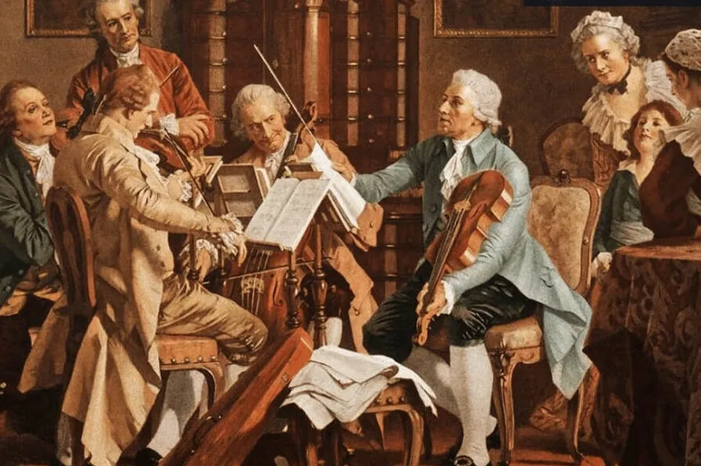
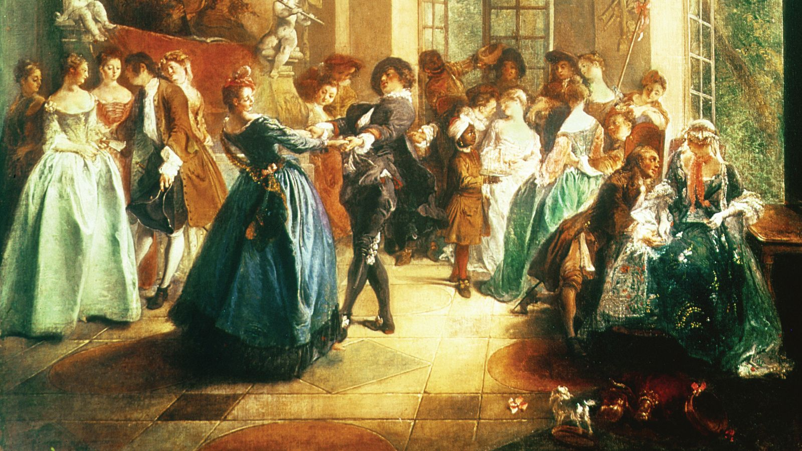
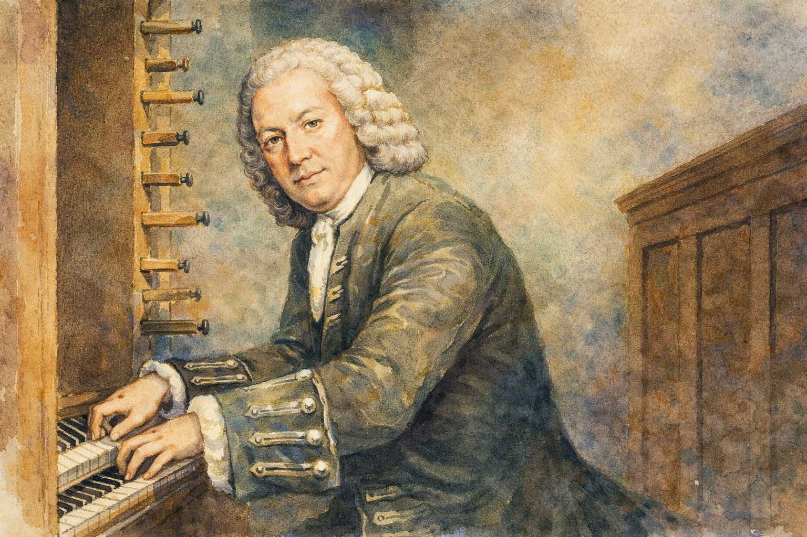

¡Se ha independizado!
En el Barroco, la música instrumental alcanza su independencia de manera definitiva frente a la vocal. Se compone música pensada específicamente para los instrumentos (cuyo perfeccionamiento abre muchas posibilidades), creándose géneros puramente instrumentales como el concierto, la suite y la fuga.
El concierto
Esta palabra tiene posiblemente su origen en el término italiano concertare, que se podría traducir como ‘rivalizar, competir’. Esto tiene sentido, ya que este género instrumental se basa en cierta «rivalidad» entre diferentes grupos de instrumentos. En el Barroco hubo dos variantes de este género:
| Concierto grosso | La rivalidad o diálogo musical se establece entre un grupo pequeño de instrumentos, llamado concertino, y el resto de la orquesta, o tutti. Destacaron en este género Corelli y Haendel. El concierto grosso desaparecerá a finales del Barroco, ya que se impondrá el concierto para solista. |
| Concierto para solista | Se establece el diálogo entre un solo instrumento (a veces dos) y la orquesta. Destacaron Torelli, Vivaldi y Bach. El concierto para solista se seguirá practicando hasta nuestros días. |

Se estructura en tres partes o movimientos que contrastan en el tempo:
| PARTE I: RÁPIDO | PARTE II: LENTO | PARTE III: RÁPIDO |
La suite
El otro género instrumental importante del Barroco fue la suite de danzas o, lo que es lo mismo, una ‘sucesión de danzas’. La suite consta de varios movimientos que contrastan en carácter. La sucesión de danzas más utilizada fue allemande-courante-zarabanda-giga.
- Allemande: de origen alemán, de ritmo binario y velocidad moderada. Tiene un carácter serio y caminado.
- Courante: de origen francés, de ritmo ternario y velocidad rápida. Es ágil y con movimientos saltados.
- Zarabanda: de origen español (e hispanoamericano), de ritmo ternario y velocidad muy lenta. Es pausada, solemne y majestuosa.
- Giga: de origen inglés / irlandés, de ritmo ternario rápido (rápido subdividido en tres) y velocidad muy rápida. Es alegre, enérgica y la que cierra la suite.

La fuga
Es una forma musical compleja y polifónica basada en la imitación. Consiste en que una melodía corta (llamada sujeto) entra primero en una voz y luego es copiada y perseguida por las demás voces a lo largo de toda la pieza, como en un juego del escondite musical.

ESCUCHAMOS PERO NO JUZGAMOS: CONCIERTO - SUITE - FUGA
🎧 Audición 7 - Concierto
Vivaldi - Concerto n.º 4 en fa menor, Op. 8, RV 297, «L'inverno» I. Allegro non molto
- ¿El concierto es solista o grosso?
- ¿Por qué sabemos que es un concierto?
🎧 Audición 8 - Suite
Haendel - Suite para clave nº4 en re menor
- ¿Qué tempo tiene esta parte de una Suite?
- Sabiendo que su ritmo es ternario, ¿de qué danza se trata?
🎧 Audición 9 - Fuga
Bach - Pequeña fuga en sol menor
- ¿Qué textura tiene esta obra?
- ¿Cómo llamamos a la primera parte que suena al inicio?
- ¿Qué le ocurre a esa parte a lo largo de toda la obra?